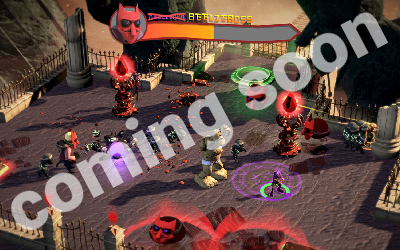

Here you can take a closer look at a curated list of projects I have worked on in the past. Scroll down to view to see my work in game audio or click --> HERE to scroll down to the film related projects <--. If you are looking for even more you can visit my Vimeo page.
Game Audio
Tumblestone
Sound Design (June 2016)
Tumblestone (sound design) - more info at Vimeo
A multiplayer action puzzle game I worked on in collaboration with "A Shell In The Pit". I was tasked with creating sound design for the entire game. I undertook two field recording trips, gathering custom sound effects in the woods. The game is releasing on Steam and Xbox One coming to other consoles later.
You can learn more about Tumblestone here. Tumblestone is also on Steam.
Headventures In The Underworld
Dynamic Music & Sound Design (April 2016)
A coop-only game with an novel and innovative control scheme. Each player uses the two anelouge sticks on the controller to navigate the body (representing health) and head ( used for attacks & solving puzzles) independently. I wrote an interactive music score and created sound design for the puzzle elements. Implemented took place in the Wwise middleware. The game is available for free at the VFS arcade.
Game Audio Demo Reel 2015
sound design & composition (2015)
Game Audio Reel - December 2015 - more info at Vimeo
A quick overview of some of the projects I worked on during the year 2015 During which I spent most of my time studying sound design at Vancouver Film School. This is by no means a complete list.
Sanity
interactive audio book (October 2015)
Sanity Music System in Wwise - more info at Vimeo
For my term 5 game audio assignment at VFS I teamed up with four other sound designers to create a 25 minute interactive audio book experience with branching story lines. This is a short overview of the dynamic music system I created out of stems with randomized sub tracks, tempo synced transition elements as well as playlist containers with differnt logic behavior.
Film
Man In The Woods
Music Re-Interpretation (Febuary 2016)
Man In The Woods - Music Re-Interpretation - more info at Vimeo
I wrote this piece for a friend of mine doing a re-interpretation of the video "There is a man in the woods" (original video) as his graduation project at Vancouver Film School. My friends narrator had a very different energy which called for a very different musical approach. It was a lot of fun creating a different atmosphere to this video and mixing the music in 5.1 surround sound:)
Endtrip
full sound replacement (October 2015)
Entrip - Sound ReDesign - more info at Vimeo
This project represents my graduation piece for my year at Vancouver Film School. I wrote the dialog script, cast actors, edited sound effects and created the entire soundscape from scratch. The music and dialog editorial was done in Ableton Live, the SFX were edited in Pro Tools (native) and the final mix in 5.1 surround sound was accomplished in Pro Tolls HD on a iCon Control-D.
Film Sound Demo Reel 2015
Sound Design (2015)
Film Demo Reel - December 2015 - more info at Vimeo
A quick overview of some of the projects I worked on during the year 2015 During which I spent most of my time studying sound design at Vancouver Film School. This is by no means a complete list.
Need For Speed: Shift 2
full sound replacement (October 2015)
Need For Speed: Shift 2 (24hour Sound Re-Design) - more info at Vimeo
This project was realized within a 24 hour period with limited resources and mixed in LCRS surround sound. To create vaiations of the 36 sound files that were provided with the video I used the KYMA sound design engine and the FireworX hardware unit among other processing techniques.
Franky
live theatrical performance (October 2014)
Franky - Performance Installation - more info at Vimeo
At CeBit 2014 CPP Studios helped IBM Germany Showcasing projects in which data analyses helped grow businesses. I created sound design for hand drawn animations and wrote an original 15 minute score balancing between clasical instrumentation and digital beats. At the event I ran the live sound and processing for the moderators as well as the live tracked actor for Franky, the robot assitant in the show.
© (2016) Christopher Tammik
available on GitHub